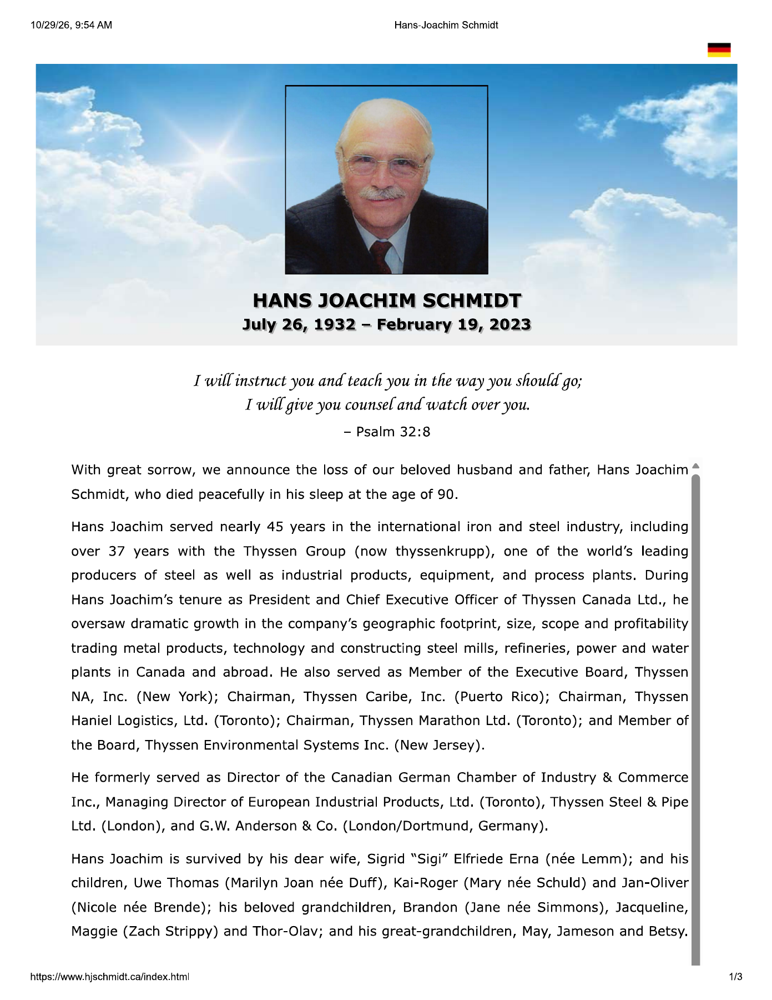

In loving memory

Hans-Joachim
Schmidt
July 26, 1932 – February 19, 2023
A life shaped by resilience.
A legacy carried by others.
Husband, father, and international industrial leader, Hans-Joachim spent nearly 45 years in iron and steel, including more than 37 years with the Thyssen Group. His greatest influence was felt in the people he encouraged, the talent he developed, and the family he loved.
He met profound loss early in life and chose optimism. His days often began before dawn; his enthusiasm for work and life endured. His motto was “Das Leben ist schön!!” — Life is good.
More · his life and legacy
Choosing hope.
Born in Remscheid, Germany, in 1932, Hans-Joachim lost his mother to pneumonia, his father to the war, and the family home and possessions to an air raid when he was eleven. He responded to those losses with hope and a determination to make the most of each day.
That optimism became a defining part of his character. He loved the satisfaction of work, approached each new day with energy, and said he would gladly live his life again—even without the benefit of knowing what he had learned along the way.
Leadership through people.
As President and Chief Executive Officer of Thyssen Canada Ltd., Hans-Joachim oversaw expansion in the company’s geographic reach, activities, and profitability. Its work encompassed metal products, technology, and industrial projects including steel mills, refineries, power plants, and water plants.
His responsibilities also included service on the Executive Board of Thyssen NA in New York; chairmanships at Thyssen Caribe, Thyssen Haniel Logistics, and Thyssen Marathon; and a board role at Thyssen Environmental Systems. Earlier appointments included European Industrial Products, Thyssen Steel & Pipe, and G.W. Anderson & Co. He also served as a director of the Canadian German Chamber of Industry & Commerce.
Hans-Joachim recognized opportunity, brought people together to pursue it, and credited others for the result. He took particular satisfaction in developing talent and connecting his own achievements to the success of his team.
A husband and father.
Hans-Joachim and Sigrid married in 1960. At his passing they were just days from their 63rd wedding anniversary. Their three sons—Uwe, Kai, and Jan—and the generations that followed remain central to his legacy.
His example belongs at the family table as much as in the boardroom: his humour, stories, optimism, and the encouragement remembered by those whose lives he touched.
More · Esmark’s tribute
Remembered by Esmark.
“Hans Joachim was a role model and inspiration to his sons”
Esmark’s tribute
Esmark’s published tribute remembered Hans-Joachim as a father, friend, and industrialist whose optimism, appreciation for life, and deep industry knowledge influenced his sons and the wider Esmark family.
The tribute also recognized the Schmidt family’s contribution to Esmark’s steel and tin businesses, connecting a father’s example with the work of the next generation.
Preserved in full
Family obituary · written by Uwe T. Schmidt · PDF ↗Esmark’s published tribute · Esmark · PDF ↗Original memorial website ↗The next chapter